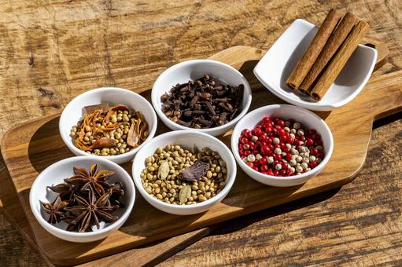

そもそもカレーってなぁに？
カレーとは、各種スパイスで具材を煮込んだもので、インドのタミール語のソースの意のカリ（Kari） から転じたという説や、「おいしいもの」という意味で使われているヒンズー語の「ターカリー」（turcarri） から「ターリ」（turri）に転じ、英名になったという説から来ています。
主にインドを中心とした、熱帯
亜熱帯地方でスパイシーな料理を総称して英語で
いろいろなレシピ
- カレーライス
- ハヤシライス
- カレーうどん
カレーの歴史
カレーの起源は...（歴史に関する説明）
種類
- 日本のカレー
- インドのカレー
- タイのカレー
カレーに使われている主なスパイス
※この他にもいろんなスパイスがあります。
- ターメリック
- クミン
- コリアンダー
- ガラムマサラ
- カルダモン
鮮やかな黄色をカレーに与え、ほろ苦い風味が特徴
やや辛い風味があり、種子として使うことも、粉末として使うこともある
甘くてほのかに柑橘系の風味があり、カレーに深みを与える
複数のスパイスを混ぜ合わせたもので、仕上げに使うことが多い
甘くて芳香があり、グリーンカルダモンとブラックカルダモンの2種類がよく使われる
人気カレーランキング
- カレーライス
- チキンカレー
- ビーフカレー
- ベジタブルカレー
- シーフードカレー